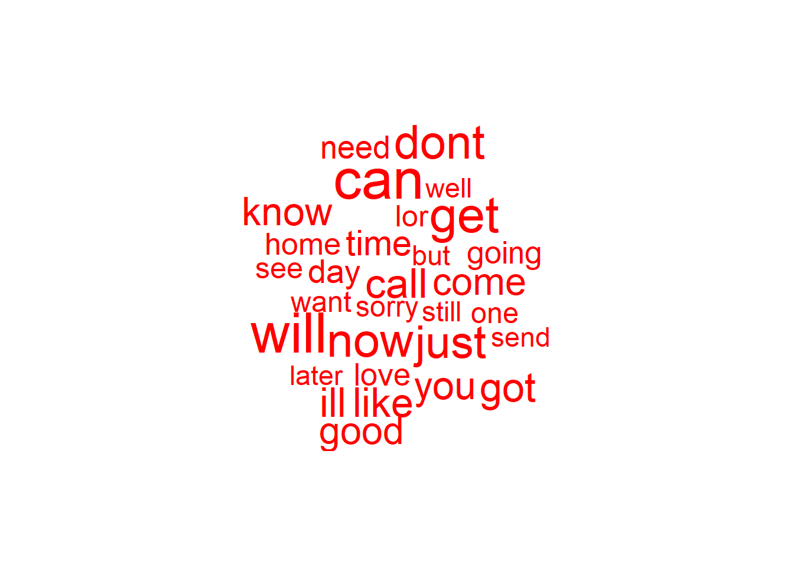

朴素贝叶斯算法过滤手机垃圾短信
Boylad · 2018-10-13
收集数据
我们将使用从网站http://www.dt.fee.unicamp.br/~tiago/smsspamcollection/
搜集的垃圾短信改编的数据。该数据集包含短信的文本信息，而且带有表明该短信是否为垃圾短信的标签。垃圾短信标记为spam，而非垃圾短信标记为ham。朴素贝叶斯分类器将根据短信中所有单词提供的证据计算垃圾短信和非垃圾短信的概率。
探索和准备数据
构建分类器的第一步涉及原始数据的处理与分析，文本数据的准备具有挑战性，因为将词和句子转化成计算机能够理解的形式是很必要的。我们将把数据转换成一种称为词袋(bag-of-words)的表示方法，这种表示方法忽略了单词出现的顺序，只是简单地提供一个变量用来表示单词是否会出现。为了使数据可以在R中方便地应用，这里所使用的数据已经对原始数据进行了更改。
setwd("C:/Users/Boylad/Documents/mydata/Machine_Learning_with_R")
sms_raw <- read.csv("sms_spam.csv", stringsAsFactors = FALSE)
str(sms_raw)
## 'data.frame': 5559 obs. of 2 variables:
## $ type: chr "ham" "ham" "ham" "spam" ...
## $ text: chr "Hope you are having a good week. Just checking in" "K..give back my thanks." "Am also doing in cbe only. But have to pay." "complimentary 4 STAR Ibiza Holiday or 拢10,000 cash needs your URGENT collection. 09066364349 NOW from Landline"| __truncated__ ...可以看到sms_raw数据文件包含了5559条短信，每条短信都有两个特征：type和text。将SMS(短信服务)的特征type编码为ham或者spam，而变量text存储整个SMS短信文本。当前的变量type是一个字符串向量。由于它是一个分类变量，所以将其转换成一个因子会更好。
sms_raw$type <- factor(sms_raw$type)
str(sms_raw$type)
## Factor w/ 2 levels "ham","spam": 1 1 1 2 2 1 1 1 2 1 ...
table(sms_raw$type)
##
## ham spam
## 4812 747可以看到改变了已经被很好地重新编码为一个因子，此外可以看到数据中有747条(约13%)条短信被标记为spam，其余的短信被标记为ham。
处理和分析文本数据
短信就是由词、空格、数字和标点符号组成的文本字符串。处理这种类型的复杂数据需要大量的思考工作，一方面需要考虑如何去除数字和标点符号，如何处理没有意义的单词，如and、but和or等，以及如何将句子分解成单个的单词。幸运的是，文本挖掘添加包tm中提供了这些功能。
处理文本数据的第一步涉及创建一个语料库，即一个文本文件的集合。在这个例子中，一个文本文件就是指一条短信，我们通过下面的命令建立一个包含训练数据中短信的语料库。
library(tm)
## 载入需要的程辑包：NLP
sms_corpus <- Corpus(VectorSource(sms_raw$text)) #VectorSource()Create a vector source上面的命令使用了两个函数。首先，函数Corpus()创建了一个R对象来存储文本文档。这个函数通过一个参数来指定所加载的文本文档的格式。因为我们已经把短信读入R并存储在一个向量中，所以我们用函数VectorSource()来指示函数Corpus()使用向量sms_train$text的信息。函数Corpus()将结果存储在一个名为sms_corpus的对象中。用print()函数输出我们刚刚创建的语料库，我们将会看到该语料库包含了训练数据集中5559条短信的每一条短信。
print(sms_corpus)
## <<SimpleCorpus>>
## Metadata: corpus specific: 1, document level (indexed): 0
## Content: documents: 5559如果要查看语料库的内容，可以使用inspect()。将该函数与访问向量的方法结合在一起，可以查看具体的短信内容。
inspect(sms_corpus[1:3]) #查看前3条短信的内容
## <<SimpleCorpus>>
## Metadata: corpus specific: 1, document level (indexed): 0
## Content: documents: 3
##
## [1] Hope you are having a good week. Just checking in
## [2] K..give back my thanks.
## [3] Am also doing in cbe only. But have to pay.语料库现在包含5559条短信的内容。在将文本内容分解成单词之前，需要进行一些清理步骤以去除标点符号和可能会影响结果的其他字符。例如，我们把单词hello!、HELLO······和Hello都作为单词hello的实例。
函数tm_map()提供了一种用来转换(即映射)tm语料库的方法。我们将使用一系列转换函数来清理我们的语料库，并将结果保存为一个叫做corpus_clean的新对象。首先，我们将把所有短信的字母变成小写字母，并去除所有数字：
corpus_clean <- tm_map(sms_corpus, tolower)
corpus_clean <- tm_map(corpus_clean, removeNumbers)在分析文本时，一个常见的做法就是去除填充词，比如to、and、but和or，这些词称为停用词(stop word)。我们将使用tm添加包中提供的函数stopwords()，这个函数包含了一组大量的停用词。如果想知道其所包含的所有停用词，可以通过stopwords()查看
stopwords()
## [1] "i" "me" "my" "myself" "we"
## [6] "our" "ours" "ourselves" "you" "your"
## [11] "yours" "yourself" "yourselves" "he" "him"
## [16] "his" "himself" "she" "her" "hers"
## [21] "herself" "it" "its" "itself" "they"
## [26] "them" "their" "theirs" "themselves" "what"
## [31] "which" "who" "whom" "this" "that"
## [36] "these" "those" "am" "is" "are"
## [41] "was" "were" "be" "been" "being"
## [46] "have" "has" "had" "having" "do"
## [51] "does" "did" "doing" "would" "should"
## [56] "could" "ought" "i'm" "you're" "he's"
## [61] "she's" "it's" "we're" "they're" "i've"
## [66] "you've" "we've" "they've" "i'd" "you'd"
## [71] "he'd" "she'd" "we'd" "they'd" "i'll"
## [76] "you'll" "he'll" "she'll" "we'll" "they'll"
## [81] "isn't" "aren't" "wasn't" "weren't" "hasn't"
## [86] "haven't" "hadn't" "doesn't" "don't" "didn't"
## [91] "won't" "wouldn't" "shan't" "shouldn't" "can't"
## [96] "cannot" "couldn't" "mustn't" "let's" "that's"
## [101] "who's" "what's" "here's" "there's" "when's"
## [106] "where's" "why's" "how's" "a" "an"
## [111] "the" "and" "but" "if" "or"
## [116] "because" "as" "until" "while" "of"
## [121] "at" "by" "for" "with" "about"
## [126] "against" "between" "into" "through" "during"
## [131] "before" "after" "above" "below" "to"
## [136] "from" "up" "down" "in" "out"
## [141] "on" "off" "over" "under" "again"
## [146] "further" "then" "once" "here" "there"
## [151] "when" "where" "why" "how" "all"
## [156] "any" "both" "each" "few" "more"
## [161] "most" "other" "some" "such" "no"
## [166] "nor" "not" "only" "own" "same"
## [171] "so" "than" "too" "very"我们将通过使用函数tm_map()来剔除数据中的停用词和标点符号。
corpus_clean <- tm_map(corpus_clean, removeWords, stopwords())
corpus_clean <- tm_map(corpus_clean, removePunctuation)既然我们已经去除了数字、停用词和corpus_clean <- tm_map(corpus_clean, removeWords, stopwords())标点符号，那么文本信息中这些字符曾经所在的地方就变成了一个空格。最后一步就是去除额外的空格，只在词与词之间留下一个空格。
corpus_clean <- tm_map(corpus_clean, stripWhitespace)我们现在看一看短信语料库中前3条短信在清理前后的对比：
inspect(sms_corpus[1:3])
## <<SimpleCorpus>>
## Metadata: corpus specific: 1, document level (indexed): 0
## Content: documents: 3
##
## [1] Hope you are having a good week. Just checking in
## [2] K..give back my thanks.
## [3] Am also doing in cbe only. But have to pay.
inspect(corpus_clean[1:3])
## <<SimpleCorpus>>
## Metadata: corpus specific: 1, document level (indexed): 0
## Content: documents: 3
##
## [1] hope good week just checking kgive back thanks
## [3] also cbe pay最后的步骤就是通过一个所谓的标记化过程将消息分解成由单个单词组成的组，一个记号(token)就是一个文本字符串的单个元素，在这种情况下，本例中的记号就是单词。tm添加包提供了标记短信语料库的功能，函数DocumentTermMatrix()将一个语料库作为输入，并创建一个稀疏矩阵，其中矩阵的行表示文档(即短信)，矩阵的列表是单词。矩阵中的每一个单元存储一个数字，它代表由列标识的单词出现在由行所标识的文档中的次数。完整的系数矩阵有5559行和7939列。
sms_dtm <- DocumentTermMatrix(corpus_clean)
str(sms_dtm)
## List of 6
## $ i : int [1:42875] 1 1 1 1 1 2 2 2 3 3 ...
## $ j : int [1:42875] 1 2 3 4 5 6 7 8 9 10 ...
## $ v : num [1:42875] 1 1 1 1 1 1 1 1 1 1 ...
## $ nrow : int 5559
## $ ncol : int 7938
## $ dimnames:List of 2
## ..$ Docs : chr [1:5559] "1" "2" "3" "4" ...
## ..$ Terms: chr [1:7938] "checking" "good" "hope" "just" ...
## - attr(*, "class")= chr [1:2] "DocumentTermMatrix" "simple_triplet_matrix"
## - attr(*, "weighting")= chr [1:2] "term frequency" "tf"我们看到在这个以 ‘ijv’ 或 ‘triplet’ 格式存储的稀疏矩阵中，非零元素一共有42875个，i对应非零元素的行坐标，j对应非零元素的列坐标，v对应i和j坐标决定的非零元素值(在这里是个数)。
1.建立训练数据集和测试数据集
我们将数据集分成两部分：75%的训练数据和25%的测试数据。因为短信的排序是随机的，所以我们可以简单地取前4169条短信用于训练，剩下的1390条短信用于测试。
#分解原始数据
sms_raw_train <- sms_raw[1:4169, ]
sms_raw_test <- sms_raw[4170:5559, ]
#输出文档-单词矩阵(稀疏矩阵)
sms_dtm_train <- sms_dtm[1:4169, ]
sms_dtm_test <- sms_dtm[4170:5559, ]
#得到语料库
sms_corpus_train <- corpus_clean[1:4169]
sms_corpus_test <- corpus_clean[4170:5559]为了确认上述子集是一个完整的短信数据的代表，可以通过比较垃圾短信在训练数据和测试数据中所占的比例：
prop.table(table(sms_raw_train$type))
##
## ham spam
## 0.8647158 0.1352842
prop.table(table(sms_raw_test$type))
##
## ham spam
## 0.8683453 0.1316547可见，无论是训练数据集还是测试数据集，它们都包含约13%的垃圾短信，这表明垃圾短信被平均分配在这两个数据集中。
2.可视化文本数据——词云
wordcloud添加包提供了一个简单的R函数来创建词云，我们将应用这个函数使短信中的单词类型可视化。比较垃圾短信和非垃圾短信有助于我们了解朴素贝叶斯短信过滤器是否有可能成功。可以从tm语料库直接创建词云。
library(wordcloud)
## 载入需要的程辑包：RColorBrewer
wordcloud(sms_corpus_train, min.freq = 40, random.order = FALSE)以上命令将从sms_corpus_train预料库创建一个词云。由于设置了random.order=FALSE,所以该词云将以非随机的顺序排列。而且出现频率越高的单词越靠近中心。如果没有设置random.order，该词云将会以默认的随机方式排列。参数min.freq用来指定显示在词云中的单词必须满足在语料库中出现的最小频率。通用的规则是，开始时设置参数min.freq的值为语料库中文档总数目的10%。
另一个有趣的可视化涉及垃圾短信和非垃圾短信词云的比较。虽然没有对垃圾短信和非垃圾短信分别建立语料库，但函数wordcloud()函数有一个非常有用的功能。给定原始文本，在建立语料库之和现实词云之前，它会自动应用文本转换过程。先从sms_raw_train获取子集：
spam <- subset(sms_raw_train, type == "spam")
ham <- subset(sms_raw_train, type == "ham")现在我们有两个包含原始文本字符串的文本特征的数据框，这一次我们将使用参数max.words，用来显示两个集合的任何一个集合中最常见的30个单词，而且参数scale允许调整词云中单词的最大字体和最小字体。
wordcloud(spam$text, max.words = 30, scale = c(3, 0.5), colors = 'darkgreen')wordcloud(ham$text, max.words = 30, scale = c(3, 0.5),colors = 'red')
很显然，墨绿色的词云就是垃圾短信的词云。垃圾短信包括urgent、free、mobile、call、claim和stop等词，而这些词一次都没出现在非垃圾短信中，相反非垃圾短信使用的单词有can、sorry、need和time等。
3.为频繁出现的单词创建指示特征
目前，该稀疏矩阵包含数量超过7000个特征，即至少出现在一条短信中的每一个单词的特征。所有这些特征不可能都对分类发挥作用。为了减少特征的数量，我们将提出训练数据中出现在少于5条短信中或者少于记录总数的0.1%的所有单词。查找频繁出现的单词需要使用tm添加包中的findFreqTerms()函数，该函数输入一个文档-单词矩阵，返回一个字符向量，该向量包含出现次数不少于指定次数的单词。下面的命令将显示一个字符串向量，该向量中的单词在矩阵sms_dtm_train中至少出现5次。：
sms_dict <- findFreqTerms(sms_dtm_train, 5)
sms_train <- DocumentTermMatrix(sms_corpus_train, list(dictionary = sms_dict))
sms_test <- DocumentTermMatrix(sms_corpus_test, list(dictionary = sms_dict))
str(sms_train)
## List of 6
## $ i : int [1:24011] 1 1 1 1 1 2 2 3 3 4 ...
## $ j : int [1:24011] 1 2 3 4 5 6 7 8 9 10 ...
## $ v : num [1:24011] 1 1 1 1 1 1 1 1 1 1 ...
## $ nrow : int 4169
## $ ncol : int 1216
## $ dimnames:List of 2
## ..$ Docs : chr [1:4169] "1" "2" "3" "4" ...
## ..$ Terms: chr [1:1216] "checking" "good" "hope" "just" ...
## - attr(*, "class")= chr [1:2] "DocumentTermMatrix" "simple_triplet_matrix"
## - attr(*, "weighting")= chr [1:2] "term frequency" "tf"
str(sms_test)
## List of 6
## $ i : int [1:7593] 1 1 1 2 2 2 2 2 2 3 ...
## $ j : int [1:7593] 1 2 3 4 5 6 7 8 9 10 ...
## $ v : num [1:7593] 1 1 1 1 1 1 1 1 1 1 ...
## $ nrow : int 1390
## $ ncol : int 1216
## $ dimnames:List of 2
## ..$ Docs : chr [1:1390] "1" "2" "3" "4" ...
## ..$ Terms: chr [1:1216] "coming" "dinner" "home" "can" ...
## - attr(*, "class")= chr [1:2] "DocumentTermMatrix" "simple_triplet_matrix"
## - attr(*, "weighting")= chr [1:2] "term frequency" "tf"现在训练数据和测试数据包含了大约1200个特征，只对应于至少出现在5条短信中的单词。
朴素贝叶斯分类器通常是训练具有明确特征的数据，因为稀疏矩阵中的元素表示一个单词出现在一条消息中的次数，于是，我们需要将其改变成因子向量，根据单词是否出现，简单地表示成yes或者no。下面的代码定义了一个函数convert_counts()，它将计数转换成因子：
conver_counts <- function(x){
x <- ifelse(x > 0, 1, 0)
x <- factor(x, levels = c(0, 1), labels = c("No", "Yes"))
return(x)
}上面的代码，第一行用来定义函数语句ifelse(x > 0, 1, 0)将改变x中的值，如果该值大于0，则它会被1替代，否则，它仍为0。命令factor()简单地将值0和1转化为用no和yes所标记的因子。最后，返回变换后的向量x。现在我们通过apply()函数将convet_counts应用于稀疏矩阵的每一列。函数apply()允许一个函数作用于矩阵的每一行或者每一列，它使用参数MARGIN来指定作用的对象是矩阵的行或者列。在这里，因为我们感兴趣的是矩阵的列，所以令MARGIN=2(=1表示行)，用来转换训练矩阵和测试矩阵的完整命令如下：
sms_train <- apply(sms_train, MARGIN = 2, conver_counts)
sms_test <- apply(sms_test, MARGIN = 2, conver_counts)
str(sms_train)
## chr [1:4169, 1:1216] "Yes" "No" "No" "No" "No" "No" "No" "No" "No" "No" ...
## - attr(*, "dimnames")=List of 2
## ..$ Docs : chr [1:4169] "1" "2" "3" "4" ...
## ..$ Terms: chr [1:1216] "checking" "good" "hope" "just" ...
str(sms_train)
## chr [1:4169, 1:1216] "Yes" "No" "No" "No" "No" "No" "No" "No" "No" "No" ...
## - attr(*, "dimnames")=List of 2
## ..$ Docs : chr [1:4169] "1" "2" "3" "4" ...
## ..$ Terms: chr [1:1216] "checking" "good" "hope" "just" ...结果是两个矩阵，每个矩阵都带有因子类型的列，用Yes和No来表示每一列的单词是否出现在所构成行的信息中。
4.基于数据训练模型
因为我们已经将原始短信转换成了可以用一个统计模型代表的形式，所以，此时是应用朴素贝叶斯算法的时候了。该算法将根据单词的存在与否来估计一条给定短信是垃圾短短的概率。我们采用e1071添加包中的朴素贝叶斯算法实现。为了基于sms_train矩阵建立模型，我们将使用如下命令。
library(e1071)
sms_classifier <- naiveBayes(sms_train, sms_raw_train$type)sms_classifier变量现在包含一个可以用于预测的naiveBayes分类器对象。
5.评估模型的性能
为了评估短信分类器，我们需要基于测试数据中未知的短信来检验分类器的预测值。未知的短信特征存储在一个名为sms_test的矩阵中，而分类标签spam和ham存储在sms_raw_test数据框中一个名为type的向量中。我们把已经训练过的分类器命名为sms_classifier，我们将用它来产生预测值，并将预测值与真实值相比较。我们用函数predict()进行预测，并将这些预测值存储在一个名为sms_test_pred的向量中：
sms_test_pred <- predict(sms_classifier, sms_test)为了比较预测值和真实值，我们将使用，gmodels添加包中的函数CrossTable(),我们将增加一些额外的参数来消除不必要的元素的比例，并使用参数，dnn(维度名称)来重新标记行和列，代码如下：
library(gmodels)
CrossTable(sms_test_pred, sms_raw_test$type,
prop.chisq = FALSE, prop.t = FALSE, prop.r = FALSE,
dnn = c("predicted", "actual"))
##
##
## Cell Contents
## |-------------------------|
## | N |
## | N / Col Total |
## |-------------------------|
##
##
## Total Observations in Table: 1390
##
##
## | actual
## predicted | ham | spam | Row Total |
## -------------|-----------|-----------|-----------|
## ham | 1203 | 30 | 1233 |
## | 0.997 | 0.164 | |
## -------------|-----------|-----------|-----------|
## spam | 4 | 153 | 157 |
## | 0.003 | 0.836 | |
## -------------|-----------|-----------|-----------|
## Column Total | 1207 | 183 | 1390 |
## | 0.868 | 0.132 | |
## -------------|-----------|-----------|-----------|
##
## 从表中可以看出，1207条非垃圾短信中有4条短信被错误地归为垃圾短信，比例为0.3%，而183条垃圾短信中有32条短信被错误地归为非垃圾短息，比例为17.5%，效果非常好。另外，本案例的研究也说明了为什么朴素贝叶斯算法是用于文本分类的一种标准算法，而且，朴素贝叶斯方法可以直接拿来使用，执行的效果也是出奇的好。
另一方面，被错误地归类为垃圾短信的4条短信可能会为过滤算法的部署带来显著的问题。如果过滤导致某人错过一条重要的约会或者紧急的情况的短信，那么他们会很快放弃这种产品，因此我们需要研究这些分类错误的短信，看看书哪里出了问题。时刻谨记错误的代价。
6.模型性能的提升
在训练模型时，我们并没有设置一个值来用于拉普拉斯估计。毫无疑问，这样就允许在分类的过程中单词可能出现在0条垃圾短信中或者0条非垃圾短信中。比如，虽然单词“ringtone”只出现在训练数据的垃圾短信中，但这并不意味着每一个含有单词“ringtone”的短信就应该被归为垃圾短信。我们还像前面一样训练朴素贝叶斯模型，但这一次我们设置laplace = 1。
sms_classifier2 <- naiveBayes(sms_train, sms_raw_train$type, laplace = 1)
sms_test_pred2 <- predict(sms_classifier2, sms_test)
CrossTable(sms_test_pred2, sms_raw_test$type,
prop.chisq = FALSE, prop.t = FALSE, prop.r = FALSE,
dnn = c("predicted", "actual"))
##
##
## Cell Contents
## |-------------------------|
## | N |
## | N / Col Total |
## |-------------------------|
##
##
## Total Observations in Table: 1390
##
##
## | actual
## predicted | ham | spam | Row Total |
## -------------|-----------|-----------|-----------|
## ham | 1191 | 18 | 1209 |
## | 0.987 | 0.098 | |
## -------------|-----------|-----------|-----------|
## spam | 16 | 165 | 181 |
## | 0.013 | 0.902 | |
## -------------|-----------|-----------|-----------|
## Column Total | 1207 | 183 | 1390 |
## | 0.868 | 0.132 | |
## -------------|-----------|-----------|-----------|
##
## 结果如上表所示，我们将错误地归为非垃圾短信的垃圾短信的数量由32减少到31，虽然这看上去只是一个很小的改进。总之，我们必须意识到如果我们对于垃圾短信的过滤过于激进，那么重要信息被遗漏的可能性是很大的。
以上内容整理自《Machine Learning with R》 by Brett Lantz